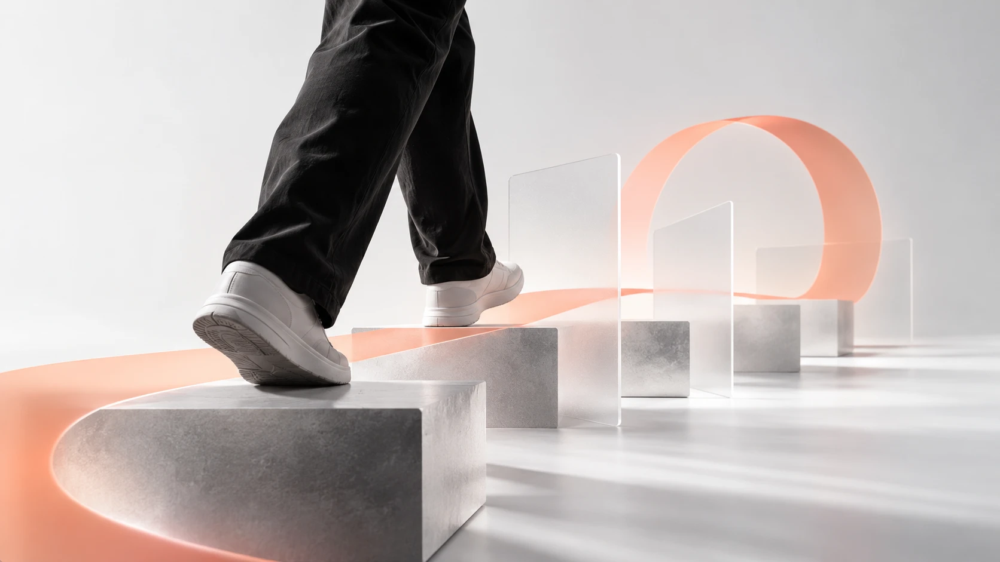

← Back to news
Scrum, grounded in the business
From the start we agree on priorities, owners and deliverables, and I review warning signs in every sprint to correct course in time.

- Understand the business. I meet with your team and your client to understand who the users are, what they need and what is expected from the product.
- Define. I write the user stories, build the roadmap, and we prioritize together what gets built first.
- Build in sprints. The team delivers progress in short cycles; I coordinate, clear blockers and keep every party informed.
- Review. I QA every user story: it is not considered done until it meets expectations.
- Adjust. At each review we look at what was built, learn and correct course.
What I learned
I learned to recognize the early warning signs of a project: vague priorities, decisions without a clear owner and expectations not agreed. Today I check them from day one.
Let’s talk about your project.
Tell me what stage your brand or product is at, and I will reply with a proposal for scope, timelines and budget.
+56 9 5821 7041Analytics only with your permissionReply within 1 to 2 business days